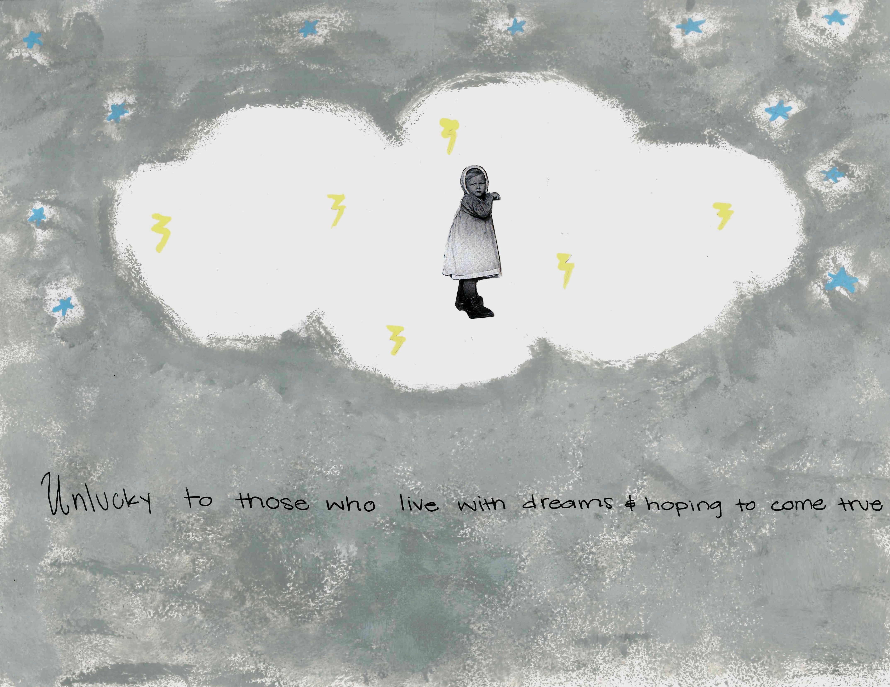

For project 2 in Humanities 10, we were able to create a poem based on mixed media collage we chose and the articles we chose from different articles. In yearbook we were able to create an art piece relating to the poems wrote.
Days have passed like the wind of dust flowing through nature we have once to make. I didn’t choose this life for myself. They chose it for me. Unlucky to those who live with dreams and hoping to come true. Dream big but lost for words when all they do is put you to work, never think about all the feelings and ideas, you have bundled up in a ball that is constantly thrown around ready to get picked up and put away. Those who seek to find a different way in life should be able to.
This is the art piece that I created relating to my poem.
By clicking on the image above it will take you to my artist statement I made that will give you more description on my art piece.
The center of attention no longer becomes you.
It becomes the constant taps you here when you start to type or scrolling
Through your phone.
The silence of the room when no one is speaking
feels like a wall being created between us,
No longer feeling like we have any communication at all.
The awkward phrases we make is what we call communication now.
Missing the way things use to be between us.
The phone divided us all.
This is my artist statement on my art piece and more description of how I related my art piece to my poem.